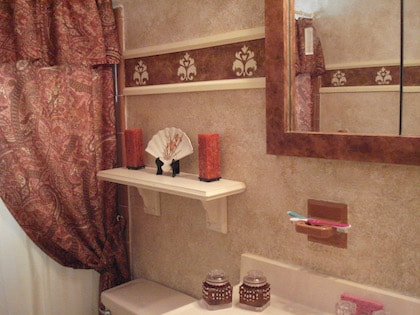
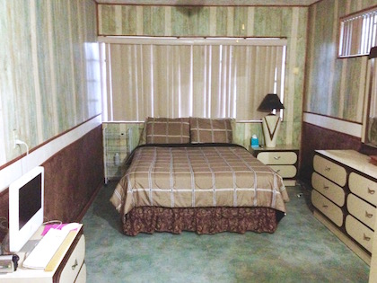
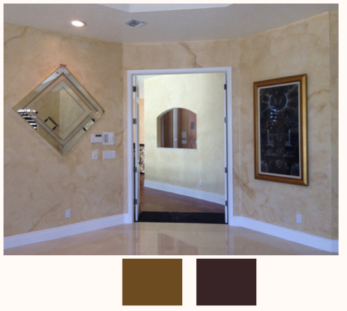
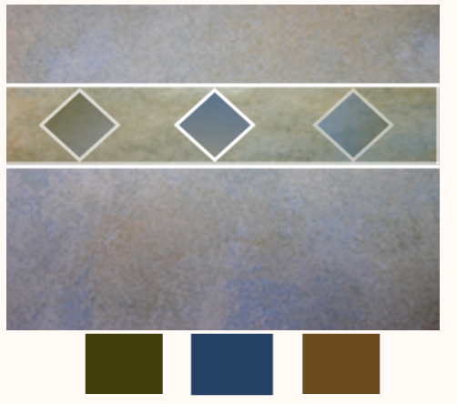
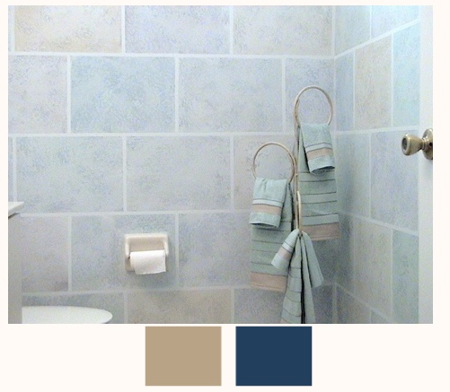
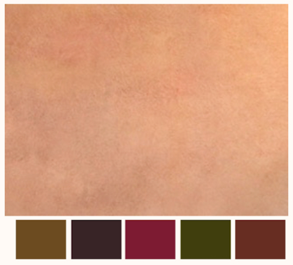

Aside from choosing your Faux Finish, choosing the right paint colors to use on your walls can be one of the most difficult decisions to make when embarking on a faux painting project.
What paint colors should I use??? That's the question. LOL Nine times out of ten, the clients I have faux painted for in the last 18 years left that answer up to me.

A great place to start in choosing your paint colors is to match any colors that appear in the existing decor of the room, whether they are found in the tile, curtains, bedspreads or even bathroom accessories. Using at least two paint colors is preferable. For instance, in a customer's bathroom (pictured above) that we faux painted, the tile, tub and toilet were all different colors. By incorporating the 3 colors onto the wall, it brought everything together, adding sense to the existing features.

Another suggestion is to go with a contrasting paint color. This works great, especially when you have a lot of one particular color in your furniture or fixtures. In other words, if you have a lot of brown, you don't want to faux paint tan or beige on the walls. Rather, you should choose a contrasting green or teal color like the bedroom above. Don't be afraid of adding dramatic colors to your walls. Besides, it's just paint and you can always paint over.
Visiting model homes or scanning through some Home Decorating Magazines can give you ideas, also. There are some neat programs online where you can actually view a variety of paint color choices using an existing room. Why not check out testimonies and pics by our customers to see the colors some of our satisfied, successful DIYers used on their faux paiting projects.

We have even put together a Color Suggestion for Faux Painting E-Book that can be a great help in getting your creative juices flowing. The best part is that for a limited time, it is emailed to you FREE OF CHARGE with the purchase of anyone of our kits from our Faux painting store. This is the perfect tool to get your creative juices flowing and will give you ideas when it comes to choosing your faux painting colors. In addition, the book shows you what colors are used for each faux finish and how to load the Multi Color Faux Palette correctly.
Here are just a few of the color scheme ideas that are in the e-book. We include the names of the colors we used from Sherwin Williams and Benjamin Moore. We also include the names and formulas for our colors that we had made just for our company, at Lowes, using Valspar paint.

This beautiful Old World wall is done with an off white base coat and 2 colors on top.

This wall is done with Color Wash technique using an off white base coat and 3 colors on top. It's a great way to paint a bathroom incorporating accesories.

Using tape, you can achieve a stylish faux brick. This bathroom is done with a white base coat and 2 colors on top.

Color washing in multiple colors is done easily with our Multi Color Faux Palette, using an existing white base coat and 5 colors on top.

Our BASIC KIT INCLUDES Multi Color Faux Palette, 2 Poofy Pads, 2 Tuck and Gather tools and Workshop DVD. It's now on sale for only $39.99 for a limited time. With our Basic faux painting kit, we teach you 10 faux finishing techniques like Old World Parchment, Color Washing, Faux Brick, Stone, Ragging, Sponging and even how to paint Clouds!
There are a variety of colors combinations we suggest for various faux finishes. As we add pages, we will notify you so you can update your file. You can print the E-Book for your personal use, too. Since you will be using the tools included in the DVD Faux Painting kit, some faux finishes show you suggestions on how to load your Multi-Color Faux Palette. The book is at least a $40 value and as we add pages, the value will only increase.

(This kit includes Basic, Faux Marble, Faux Wood Kit and tools for texturing)
*FREE Priority Shipping and Color Idea E-book